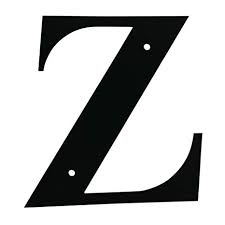

Ymodem
Es un protocolo de transferencia de archivos para PC.
Utiliza el método de detección de errores por CRC, bloques de 1024 bytes y un bloque extra al principio de la transferencia que incluye el nombre del archivo, el tamaño y la fecha.
Yottabyte
Unidad de información que equivale a 1000 zettabytes o
10^24 bytes (1, 208, 925, 819, 614, 629, 174, 706,176 bytes). Símbolo YB.
Ytalk
Programa en ambiente UNIX similar a IRC que permite la
comunicación en tiempo real entre varios usuarios.

Zettabyte
Un zettabyte es 2 a la 70 potencia, o
1,180,591,620,717,411,303,424 bytes. Un zettabyte son 1,024 exabytes y precede al yottabyte. Ya que un zettabyte es un tamaño tan enorme, esta unidad de medida se usa muy poco. Su símbolo es ZB.
ZIF
Un ZIF (Zero Insertion Force) es la forma fisica como los
microprocesadores Intel 486 y Pentium hasta el Pentium II conectan la tarjeta madre (motherboard) de la computadora con el Bus de Data. Un socket de ZIF contiene una "palanca" que se abre y se cierra, asegurando que el microprocesador se mantenga en su lugar.
Zipear
Se refiere a la acción de comprimir en un solo archivo a
un grupo de archivos que por lo general se comprimen también para que ocupen el menor espacio posible en la computadora y aminore el tiempo en que se transmiten a través de Internet.